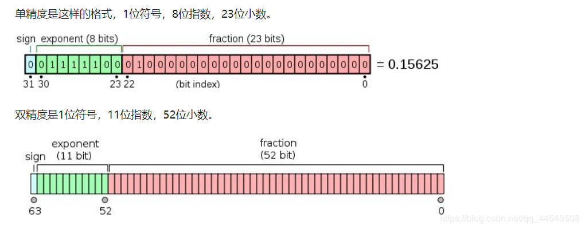

作为一名java学习者，怎能不懂这些java基础中的基础呢？本文就带各位温顾温顾java浮点型、单精度浮点数、双精度浮点数。
首先明确java中浮点型数据类型主要有：单精度
float、双精度double
至于浮点型就是跟
int，string类型差不多。都是数据类型。
浮点型浮点型别给我整些花里胡哨的定义，浮点型简单来说就是表示带有小数的数据，而恰恰小数点可以在相应的二进制的不同位置浮动，可能是这样就被定义成浮点型了。~不得不佩服这文化程度，定义个数据名称都这么有深度~
浮点型常量 Java的实常数有两种表示形式：
1、 十进制数形式：由数字和小数点组成,且必须有小数点,如
0.123,123.0
2、科学计数法形式：如:
123e3或123E3,其中e或E之前必须有数字,且e或E后面的指数必须为整数（当然也包括负整数）。
了解浮点型常量 Java的实常数有两种表示形式之后，很有必要给各位科普科普下科学计数法中E的面貌了~
E是指数的意思，E代表的英文是exponent，E表示10的多少次方的意思。
比如
7.823E5 = 782300这里E5表示10的5次方，再比如54.3E-2 = 0.543这里E-2表示10的-2次方
再补充一点（针对负次方理解）
一个数的负几次方就是这个数的几次方的倒数。
比如： 2的负1次方＝2的1次方分之一＝
1/2
比如： 3的负2次方＝3的2次方分之一＝
1/9
单精度浮点数在机内占
4个字节、有效数字8位、表示范围：-3.40E+38 ~ +3.40E+38
在Java语言当中，所有的浮点型字面值 ~【V8提示】浮点型简单来说就是表示带有小数的数据~ 默认当做double类型来处理，要想该字面值当做float类型来处理，需要在字面值后面添加F/f,或者强制装换为float。具体如下代码：
public static void main(String[] args) {
//3.10是浮点型，浮点型字面值默认当做double类型来处理，直接编译通过；
double d=3.10;
//3.10是浮点型，则必须加 F或者f，若没加，直接编译不通过，会报错“损失精度”
float f=3.10; //编译出错会报错“损失精度”
// 解决办法：
// 第一种方式：强制类型转换
float f1=（float）5.1；
// 第二种方式：没有类型转换；
folat f2=5.1f;
}再来看看下面的测试，结果肯定十之八九会在意料之外，哈哈~
public static void main(String[] args) {
float a = 12345678.90123456789f;
double b=0.12345678901234567890;
float c=0.12345678901234567890f;
System.out.println(a);
System.out.println(b);
System.out.println(c);
打印结果
a = 1.2345679E7
b = 0.12345678901234568
c = 0.12345679
}双精度浮点数在机内占
8个字节、有效数字16位、表示范围：-1.79E+308 ~ +1.79E+308
double的精度太低，不适合用于做财务软件，财务涉及到钱的问题，要求精度较高，所以在java中有一个基础的类库名为：java.math.BigDecimal，但这个BigDecimal类型是引用类型不是基础类型，切记！！！
在讲单精度浮点数（float）的时候，差不多顺道把double之间的区别讲了哈哈，所以最后给张很经典的图片“敷衍敷衍”下，哈哈哈 ~哎哎哎..别打...别打...别打脸QAQ~

想深入了解浮点数在计算机中存储方式可以参考这篇文章
浮点数在计算机中存储方式